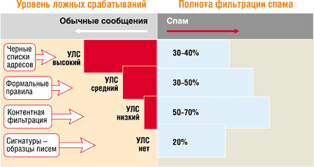

Игорь Ашманов,
генеральный директор компании "Ашманов и партнеры"
igor@ashmanov.ru
Спам - это несанкционированная массовая анонимная рассылка электронных писем. За последние полтора-два года спам стал острой проблемой, актуальность которой постоянно возрастает. По осторожным оценкам, в России сегодня рассылается примерно 15-30 млн спамовых сообщений в день, а во всем мире - от 5 до 10 млрд нежелательных рекламных сообщений в день. Причем, по прогнозам экспертов, в ближайшие два года объем спама как минимум удвоится.
Рынок спамерских услуг - это действительно профессиональный рынок с довольно зрелой инфраструктурой и определенной системой разделения труда. Здесь можно выделить несколько слоев: рассыльные службы, собиратели баз адресов, производители ПО. Есть также компании, объединяющие в своем лице несколько функций. Среди спамеров есть и "непрофессионалы", которые, как правило, пытаются рекламировать собственную компанию, а не внешних заказчиков. Конечно же, основную угрозу представляют профессиональные компании, которые, имея весьма прибыльный бизнес, в состоянии использовать квалифицированных специалистов и обеспечивать отличное техническое оснащение и юридическую поддержку своей деятельности.
Основные методы борьбы со спамом
Способы противодействия спаму можно условно разделить на несколько категорий.
Юридические и социальные способы. Имеются в виду, например, такие акции: принять закон о спаме и наказывать спамеров; создать службы для выявления и преследования спамеров; дать провайдерам полномочия для фильтрации почты и т. д.
Процедурные способы подразумевают повышение защищенности электронной почты: введение платных электронных марок, подтверждение отправки и т. п. Такие меры должны сделать спам процедурно невозможным или экономически невыгодным.
Технические способы предполагают фильтрацию спама с помощью технических средств.
Пропаганда: разъяснение незаконности и аморальности спама. Демонстрация альтернативных - эффективных и законных - методов рекламы в Интернете.
Анализируя методы борьбы, следует понять, какие именно аспекты проблемы можно разрешить с их помощью. Пропаганда должна предотвратить приток новых спамеров, причем в основном из категории "любителей". Юридические методы направлены против самих спамеров, но не против спама как такового. К тому же нужно иметь в виду, что эти методы необходимы, но явно недостаточны: об этом говорит хотя бы накопленный опыт борьбы с компьютерными вирусами.
Процедурные методы (мы не будем детально обсуждать имеющиеся здесь возможности) могут дать некоторый эффект, но в любом случае их применение требует определенной коррекции работы самого Интернета, что в любом случае не удастся реализовать быстро.
Таким образом, на ближайшее время (год-два), на наш взгляд, остается только один более или менее перспективный путь - фильтрация спама теми или иными техническими средствами.
Кто борется со спамом
Состояние отрасли средств борьбы со спамом в целом можно охарактеризовать как еще незрелое. Каждый месяц появляется множество новых продуктов для фильтрации спама и предложений по реорганизации Интернета и электронной почты. Однако пока в компьютерном сообществе не выработано понимание того, что именно должны делать эти средства, какими функциями они должны обладать, каков допустимый процент распознавания спама и ложных тревог, как тестировать программы фильтрации, на каких массивах писем и т. д.
Сегодня ряд организаций просто вынуждены устанавливать антиспамерские средства - это владельцы почтовых служб и провайдеры. В первую очередь мишенью спамеров становятся бесплатные почтовые сервисы (Mail.ru, Hotmail.com, почта Yahoo, Rambler, Яndex, Hotbox.ru и т. п.), потому что они насчитывают миллионы пользователей и в силу своего публичного положения очень уязвимы для спамерских атак. Доля спама здесь достигает 75%. Для борьбы с ним применяются различные методы фильтрации. Западные публичные почты - Yahoo, Hotmail, MSN, AOL, по словам их представителей, практически все без исключения используют те или иные фильтры, однако спама в них по-прежнему много, что, возможно, объясняется невысоким уровнем интеллектуальности используемых фильтров.
Провайдеры доступа в Интернет используют в основном черные списки (публичные и собственные внутренние), позволяющие сразу отказаться от получения письма на основании IP-адреса отправителя.
По нашим оценкам, прошедшим летом уже до половины спама приходилось на долю личных и корпоративных почтовых ящиков. Однако в настоящее время основную долю пользователей антиспамерских средств в этом сегменте (частные лица и системные администраторы организаций) составляют так называемые пионеры, т. е. те, кто постоянно пробует технические новинки, готов их устанавливать и настраивать самостоятельно, даже при отсутствии документации или технической поддержки. Именно ориентируясь на эту категорию людей, мы расскажем ниже о технических методах борьбы со спамом.
Что требуется от антиспамерского ПО
Хотя может показаться, что главное - это распознать 100% спама, на самом деле главное - не допускать ложных срабатываний, т. е. случаев, когда нормальное деловое письмо принимается за спам. Ясно, что в теории фильтрацию 100% спама обеспечить легко - не пропускать никаких писем вообще. Но нужно ведь не это: деловые и личные письма должны доставляться получателю без проблем.
Распознавание спама и ложные срабатывания - классический рычаг, как "время-сила" в физике или "быстродействие-память" в программировании. На определенном уровне развития технологии либо то, либо другое страдает.
Можно сказать, что идеальное средство от спама должно почти никогда не допускать ложных срабатываний и фильтровать почти 100% спама. "Почти" - потому что на 100% выполнить обе задачи одновременно невозможно.
О тестировании
Мы не приводим никаких собственных данных по тестированию антиспамерского ПО - фактически сейчас нет достоверных данных на этот счет, систематического тестирования антиспамерских методов и программ не проводится. Тому есть две основные причины: во-первых, еще не выработано общепризнанных методик тестирования (в первую очередь из-за отсутствия эталонных массивов почты и чрезвычайно сильной изменчивости потока спама во времени), и во-вторых, большая часть фильтров дает пока очень плохие результаты - т. е. фактически тестировать в них нечего.
Для общего понимания того, как тестируют антиспамерские фильтры, можно порекомендовать читателю две статьи из PC Magazine, в которых рассказывается о сравнительном тестировании персональных фильтров (см. http://www.pcmag.com/article2/0,4149,849389,00.asp) и корпоративных фильтров спама (см. http://www.pcmag.com/article2/0,4149,849390,00.asp)*. Правда, методика тестирования и тут "самодельная".
*Перевод этих статей опубликован в PC Magazine/RE, № 5'2003, с. 80. - Прим. ред.
Собственно же результаты тестирования PC Magazine поражают: персональные фильтры дают в среднем 4% ложных тревог, что совершенно недопустимо, а корпоративные на порядок меньше - в среднем 0,3-0,5%, но и это, на мой взгляд, слишком много (три-пять ложно задержанных деловых писем на тысячу - катастрофа для корпоративного фильтра, проверяющего сотни тысяч писем в день).
Полнота распознавания спама в тестах PC Magazine также сильно колеблется - от 50-70% у персональных средств до 70-90% (и то и другое - невысокие показатели), и это заставляет предположить, что не только программное обеспечение пока плохо работает, но и сама методика тестирования несовершенна. Поэтому ниже в разделе "Персональные фильтры" мы приводим просто список антиспамерских программ для персонального пользования без оценок их качества.
Процедурные методы борьбы со спамом
Существует определенное количество методов и программ, эксплуатирующих идею верификации отправителя.
Карантин. Присланное письмо пропускается, если отправитель известен (находится в "белом списке"); в противном случае оно помещается в карантин. Далее пользователь может вручную проверить задержанные письма и добавить адреса в белый список. Сам по себе простой, метод карантина довольно утомителен для пользователя, поэтому обычно задержка письма на карантин дополняется просьбой подтвердить отправку письма, чтобы проверить, что отправитель действительно существует.
Проверка существования отправителя. Любое письмо от неизвестного корреспондента задерживается в карантине, а отправителю отправляется письмо с просьбой подтвердить посылку. Часто, чтобы отсеять возможный ответ от спамерского робота, отправителю предлагается ответить на простой вопрос или ввести число, показанное в виде графического образа. Из наиболее известных в нашей стране программ фильтрации спама, построенных на верификации отправителя, можно назвать WinAntiSPAM (http://www.antispam.com).
Электронные марки и сертификаты. В настоящее время во многих антиспамерских ассоциациях и в сетевом сообществе активно обсуждается идея создать систему аутентификации отправителей на основе электронной подписи письма, сертификата отправителя и т. д. Технически здесь все кажется весьма простым - нужно снабдить каждое письмо той или иной "электронной маркой", а каждый почтовый сервер - средствами верификации таких марок, и не принимать никакой другой почты. Но вот социальные аспекты данной идеи, на взгляд автора, и станут камнем преткновения. Такой метод, безусловно, будет работать, но потребует модификации протоколов пересылки почты и в любом случае - создания фактически глобального стандарта, что не так просто, учитывая, что электронной почтой пользуются примерно 500 млн человек в сотне стран. Сегодня многие системные администраторы не в состоянии даже соблюдать простейшие правила настройки почтового сервера, принятые всем Интернет-сообществом, так что о внедрении нового протокола говорить пока не приходится.
Методы распознавания спама
Технически существуют два основных подхода к фильтрации спама - по формальным признакам сообщения (по способу посылки и оформлению) и по его содержанию (т. е. по смыслу - семантически).
Формальные методы включают фильтрацию по спискам (почтовых адресов, IP-адресов) и фильтрацию по формальным признакам письма (наличие полей, много отправителей, нет получателя, путь, формат, размер и т. п.).
Семантические методы предполагают распознавание по содержанию письма (словосочетания, эвристики, статистика) или распознавание по образцам писем (по сигнатурам, с голосованием и т. п.).
Формальные методы
"Черные" и "белые" списки. Черные списки (real-time blackhole lists - RBLs) - это списки IP-адресов известных спамеров, адресов открытых почтовых пересылок, используемых спамерами эпизодически или регулярно, и списки диапазонов адресов тех сетей, которые не борются со спамерами или слишком к ним либеральны. Эти списки ведут организации провайдеров и некоторые доброхоты. Наиболее известных списков около десятка. Количество "плохих" адресов в черных списках достигает сотен тысяч. Антиспамерские программы обычно "подписываются" на те или иные списки и проверяют по ним адреса отправителей. Администратор системы или частный пользователь может также вести свои белые списки (списки друзей), от которых почта принимается всегда.
Формальные правила. Правила проверяют форму письма - способ его посылки и оформление. К типичным признакам спамерского письма относятся отсутствие адреса отправителя, отсутствие или слишком большое число получателей, отсутствие IP-адреса в системе Интернет-адресов DNS, фальшивые или некорректные технические заголовки и т. п. Часто также проводится фильтрация по размеру или формату сообщения. Набор правил антиспамерской программы может содержать сотни и даже тысячи правил. Наиболее развитый набор правил - у распространяемой бесплатно программы SpamAssassin (http://www.spamassassin.org).
Лингвистические методы
Сигнатуры. Для каждого спамерского письма может быть автоматически создана так называемая сигнатура, позволяющая распознать это письмо, иногда даже с небольшими модификациями. Сигнатуры - это слепки письма, его отпечатки пальцев, более короткие, чем само письмо, но идентифицирующие его достаточно точно. Сигнатуры могут быть самыми разными: список наиболее часто встречающихся слов документа, вектор служебных слов, контрольные суммы байтов каждых пяти слов и т. д.
Сигнатуры хороши тем, что почти не дают ложных срабатываний. Они используются как в персональных/корпоративных продуктах, так и в сетевых сервисах, основанных на голосовании пользователей (см. ниже).
Лингвистические эвристики. Это наборы характерных для спама терминов (слов и словосочетаний) вместе с их вероятностными показателями (вероятностью встретить их в спамерском письме). Эвристики хороши тем, что позволяют распознать совершенно новое спамерское письмо за счет ограниченности языка спамеров, а плохи - тем, что требуют серьезной ручной работы с письмами. Чтобы работать хорошо, база эвристик должна включать десятки тысяч терминов.
На рисунке показано, как соотносятся множества писем, распознаваемые различными методами. Качество метода оценивается двумя основными показателями: полнотой (процент распознанных спамерских писем относительно общего потока) и уровнем ложных срабатываний (УЛС - количество нормальных писем, признанных спамом).
|  |
| Эффективность фильтрации различными способами.
|
Следует обратить внимание на то, что на рисунке множества писем, признаваемых спамом, "задевают" область нормальных деловых и личных писем. Это показывает важность проблемы ложных срабатываний.
Самообучающиеся фильтры. В последнее время довольно много пишут о так называемых статистических байесовских фильтрах, которые сами обучаются распознавать спам на образцах писем пользователя. Можно слышать и мнение, что байесовские фильтры решают проблему фильтрации спама.
Сама по себе технология не представляет собой ничего нового - данный метод известен в кибернетике более 30 лет. Основная идея такова: берутся два эталонных массива, массив спамерских писем и массив "нормальных" сообщений. Для каждого слова из обоих массивов вычисляется частота вхождения в оба массива. Если некоторое слово часто встречается в спамерских письмах и редко - в обычных, то обнаружение такого слова в новом письме с некоторой вероятностью указывает на то, что письмо представляет собой спам. Естественно, большее количество таких слов в письме дает большую уверенность.
При анализе спама остается взять все слова из анализируемого письма и объединить их "спамерские" вероятности, получив таким образом оценку всего письма в целом. Объединение выполняется по известным формулам условных вероятностей Байеса, почему такие фильтры и называются байесовскими. Фактически здесь работа по составлению лингвистических эвристик возложена на саму программу. Наиболее известная программа этого рода - бесплатная Popfile, относящаяся к числу ПО с открытым исходным кодом (загрузить ее можно по адресу http://sourceforge.net/projects/popfile).
Идея автоматически обучать программу поначалу производит сильное впечатление, однако, как обычно, у данного метода есть свои ограничения. Во-первых, борьба со спамом, равно как и с вирусами, - это борьба человека с человеком. Сомнительно, что удастся раз и навсегда заменить одну из сторон довольно простым автоматом. Спамеры постоянно предпринимают энергичные усилия для обмана вероятностных фильтров.
Достаточно упомянуть два приема, чтобы понять, что вероятностные фильтры - не панацея. К примеру, в последнее время спамеры начали применять вставку в письма случайных последовательностей и случайных слов (и даже обширных цитат из Шекспира и Уитмена). Применяется также случайная замена букв на похожие по написанию (например, русских "у", "о", "а" на соответствующие латинские или английских гласных - на немецкие с умляутами). Это дает десятки тысяч новых несуществующих "слов" каждую неделю.
Во-вторых, вероятностные фильтры вообще довольно неустойчивы относительно потока спама. Их приходится постоянно доучивать, и далеко не все пользователи готовы этим заниматься.
Детекторы массовых рассылок. Этот метод может применяться там, где есть большие потоки почты, - у провайдеров и на публичных почтовых серверах. Если какое-то письмо направлено сразу в сотни тысяч адресов и при этом адрес отправителя не входит в список основных серверов подписных рассылок (наподобие Subscribe.ru), можно с большой вероятностью предположить, что это спамерская рассылка.
Чтобы таким образом детектировать спам, нужно два условия: а) большой поток почты, б) способ определения "одинаковости" писем. Для последнего применяются различного рода сигнатуры - "отпечатки пальцев" письма. В частности, данный метод применяет почтовая служба Яndex - письма, разосланные массово, откладываются в специальную папку "Рассылки". Заметим, что данный метод не может с уверенностью дать заключение, действительно ли это спам, а только констатирует факт массовости рассылки.
Голосование пользователей. Ту же идею с сигнатурами письма можно использовать и другим способом: центральный сервер собирает от пользователей либо образцы спама, либо уже созданные пользователями сигнатуры спамерских писем (для чего пользователям бесплатно раздаются средства генерации сигнатур). Сигнатуры накапливаются на сервере, и для них подсчитывается количество обращений с данной сигнатурой; при превышении некоторого порога "популярности" соответствующее письмо признается спамерским и добавляется в базу "плохих" сигнатур. Далее с некоторой периодичностью на компьютеры пользователей отправляется обновление базы фильтра, содержащее сигнатуры спамерских писем.
Бесплатный сервис голосования предоставляет так называемая Бритва Вайпула (Vipul's Razor, http://razor.sourceforge.net). Этот продукт рассчитан в основном на Linux и подходит для тех, кто готов повозиться с установкой и прилаживанием к своему почтовому клиенту фильтра, написанного на языке Perl.
Наиболее известный платный сервис этого рода - фильтр SpamNet компании Cloudmark (http://www.cloudmark.com/products/spamnet). SpamNet предлагает простые в установке фильтры для Outlook 2000/XP. Нужно заметить, что в основе SpamNet лежит именно Vipul's Razor.
Ясно, что метод голосования хорош тем, что пополнение базы фильтрации перекладывается на плечи антиспамерского сообщества. Это типично интернетовская идея - сделать вместе то, что не под силу одиночке. Если сообщество велико, можно рассчитывать получить достаточно полную базу. Ограничения этого метода также очевидны: он работает постфактум, и у него нет предсказательной силы. Действительно, база всегда находится на шаг позади спамеров - чтобы письмо попало в базу, оно должно уже быть разослано по достаточно большому количеству адресов.
Персональные средства фильтрации спама
Для борьбы со спамом можно применять встроенные средства почтовых программ. Кроме того, существует уже довольно много персональных продуктов. Заметим, что большая часть программ для борьбы со спамом использует одновременно различные методы детектирования спама.
Встроенные средства почтовых программ
В почтовых программах для пользователя есть средства фильтрации, построенные в виде "пустой рамки" для правил, которые пользователь должен задавать сам.
В частности, именно так устроены правила фильтрации Outlook (называемые Rules Wizard). Для Microsoft Outlook поставляется начальный набор правил распознавания спама (junk mail), состоящий из нескольких десятков терминов. Весьма распространенный в нашей стране почтовый клиент The Bat! также имеет мощные средства создания правил фильтрации, однако опять-таки представляет собой пустую рамку, которую пользователю предлагается заполнять самому. Увы, этот подход не работает. Пользователь, как правило, сам ничего не настраивает, а правила от Microsoft лишь изредка распознают небольшой процент старомодных спамерских писем. Скачать же новые базы негде - вторичного рынка правил для Outlook не возникло.
Сами правила в Outlook слишком примитивны, не позволяют распознавать разные формы слов и использовать статистические соображения о доле спамерской лексики. Таким образом, можно сделать вывод, что рассчитывать на ручную настройку фильтров пользователем не приходится. Впрочем, компания Microsoft обещает, что в ее новом Outlook 2003 будут более развитые средства фильтрации и "разъемы" для подключения фильтров от третьих сторон.
Отдельные персональные фильтры
Вот краткий обзор наиболее известных и эффективных программ этого класса.
SpamKiller. Продукт компании McAfee (http://www.mcafee.com), куплен у NovaSoft. В настоящий момент интегрируется с также купленным SpamAssassin Pro. Независимый почтовый клиент; проверяет почту до попадания ее в почтовый клиент пользователя (Outlook, Bat! и т. п.). Развитый, зрелый продукт, использует синтетический метод (содержит правила для заголовков, ключевые слова, белые списки и т. д.).
Norton Spam Alert. Составная часть пакета Norton Internet Security компании Symantec (http://www.symantec.com). Отдельная программа, в Outlook не встраивается. Анализирует текст сообщения "на основе обученной нейронной сети", фактически представляет собой эвристический фильтр (обучаемый не пользователем, а разработчиками). Позволяет заводить черные и белые списки.
SpamCatcher. Разрабатывается компанией Mailshell (http://www.mailshell.com). Встраивается в Outlook 2000/2002, поддерживает большинство известных почтовых серверов, включая скачивание почты с Hotmail. Основной принцип обнаружения построен на сигнатурах и детекции массовых рассылок в собственной почтовой сети. Имеются правила, присваивающие письму вероятность оказаться спамом, поддерживаются также белые пользовательские списки (в том числе закачка в них всей адресной книги).
SpamNet. Производится компанией Cloudmark (http://www.cloudmark.com), фактически представляет собой коммерческую версию Vipul's Razor. Распознавание спама построено на сигнатурах, присылаемых пользователями (принцип голосования). Черных списков и формальных правил не использует.
IHateSpam. Продукт компании Sunbelt Software (http://www.sunbeltsoftware.com). Принципы работы не раскрываются. Скриншоты на сайте содержат только способы создания белых и черных списков.
Popfile. Бесплатная программа, разрабатывается на основе открытого исходного кода (http://sourceforge.net/projects/popfile). Построена на самообучении программы на эталонных массивах (байесовский метод).
Большинство названных выше программ можно скачать в пробных версиях на сайте pcworld.com (http://www.pcworld.com/downloads/file_description/0,fid,22343,00.asp).
Нужно сказать, что в отношении всех западных программ фильтрации есть одно туманное обстоятельство - заранее никогда не известно, как они будут работать с русскоязычным спамом. Наши отечественные спамеры гораздо изобретательнее, тем более что русский язык значительно сложнее, да и содержание отечественного спама сильно отличается от западного (в основном реклама мелкого бизнеса вместо рекламы порносайтов).
Есть и отечественные программы фильтрации спама.
WinAntiSPAM. Разрабатывается компанией OfficeTune. Принцип действия - белый список и карантин писем от неизвестных отправителей с посылкой запроса отправителю (http://www.winantispam.com/ru).
BayesIt! Статистический антиспамерский фильтр Байеса для The Bat!. Принцип работы - статистический байесовский алгоритм. Разработчик - Алексей Виноградов (http://klirik.narod.ru/usefuls/bayesit.htm). По словам автора, алгоритм учитывает особенности российского спама.
Kaspersky Personal Antispam. Разрабатывается "Лабораторией Касперского" (http://www.kaspersky.ru), использует технологию корпоративного спам-фильтра "Антиспам Касперского" (сигнатуры, эвристики, списки, формальные правила). Выход продукта ожидается в начале следующего года.
Корпоративные фильтры спама
Фильтры для корпораций представляют собой серверные решения, устанавливаемые "на входе" в корпорацию. Основное отличие их от персональных средств фильтрации - развитая бизнес-логика, т. е. средства настройки для администратора, позволяющие определить, что делать с распознанным спамерским письмом - удалить, отложить, переслать и т. д. Кроме того, для корпоративного сервера фильтрации важна высокая производительность.
Среди корпоративных фильтров спама стоит упомянуть Brightmail Antispam Enterprise Ed., SurfControl E-MAIL Filter, MessageLabs SkyScan AS, Postini Perimeter Manager, Kaspersky Antispam.
Сравнение и описание характеристик корпоративных фильтров - тема отдельной статьи, здесь же скажем только, что большая часть этих корпоративных продуктов использует одновременно несколько методов фильтрации, некоторые из них автоматически скачивают обновления базы фильтрации, практически все позволяют подписаться на "черные списки" третьих сторон.
Качество корпоративных фильтров, по-видимому, выше, чем у персональных, однако и здесь не сложилось признанной системы независимого тестирования и "табели о рангах". Заметим, что упоминавшийся выше отчет о тестировании корпоративных фильтров от PC Magazine показывает пока весьма низкое качество фильтрации (в среднем 0,3-0,5% ложных тревог при пропуске 6-15% спама).
Будущее борьбы со спамом
Сформулируем основной вывод: в борьбе со спамом будущее за профессиональными программными продуктами для фильтрации. Мы считаем, что в ближайшие год-два сформируется рынок таких продуктов. Они будут обладать следующими свойствами:
- использование всех методов фильтрации, как формальных, так и лингвистических (объединенных единым интеллектуальным решающим центром);
- использование "антивирусной" схемы бизнеса: поддержка в режиме 24х7 от специальной лаборатории по борьбе со спамом (аналог антивирусных лабораторий) и регулярные обновления баз (скачиваемые автоматически через сеть);
- простота установки и использования (фильтрация "под ключ", работа по схеме "черного ящика").
Можно рассчитывать на то, что эти продукты будут фильтровать до 90-95% спама. С оставшимся "процентом протечки" спама нам, скорее всего, придется мириться.